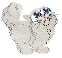

Go back
QUICK DISCLAIMER: I am not the person who discovered this. I ran into this page
and saw the dragon with textured eyes. So naturally, I went crazy for a few hours trying to figure out
how in the world this person textured the eyeballs. Then I felt pretty dumb after figuring it out because they're just paintballz.
(Still have no clue how to put textures in the paintballz.) So credits to Moonflower for being smart and for her generous free bases!
I'd also not be doing what I am if it weren't for all the kind supportive people in the petz community answering all of the thousands of questions that I ask.
Thank you to everyone who's been supportive!!
And now, I will show you how to make pretty eyes like on this chinchilla :)

We will start with an oshie base.
Now we will remove its irises by applying the size tool to the irises in balls. There will be no apparent change in PW, but this will be a good thing in a minute.
Now you should have an oshie that looks like this.
Make sure to apply the same thing to the kitten LNZ as well or your end product will look like this:
This can easily be done in LNZ pro. I changed the sizes to -100.

In PW I will now color the iris and pupil to look like they're faded so that I can easily use them as a base. We will not see this in the game.
And now it's time for the fun part! Got to the paintballz editor and use the faded pupil as a guide for where you'll put your paintballz.
I'll be drawing him with yellowish snake eyes.
Hmmm, I don't like the yellow eyeball. I'll change it back to white.
Now we have our snake eye kitty!
Also if you do not want this to happen when your pet faces away, you will need to anchor all the paintballz you just made.

To do this, open up LNZ Pro and add 0 to the end of each eye paintball.
Have fun designing unique eyes :D
If you wanna see Snake's eyes in-game, you can click here to download her!